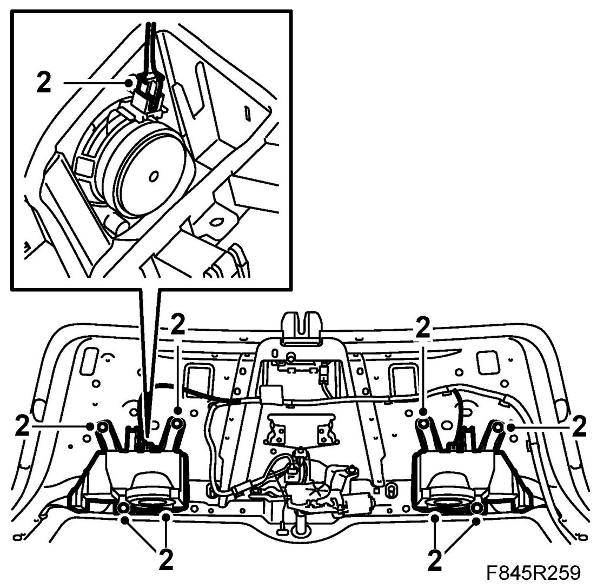
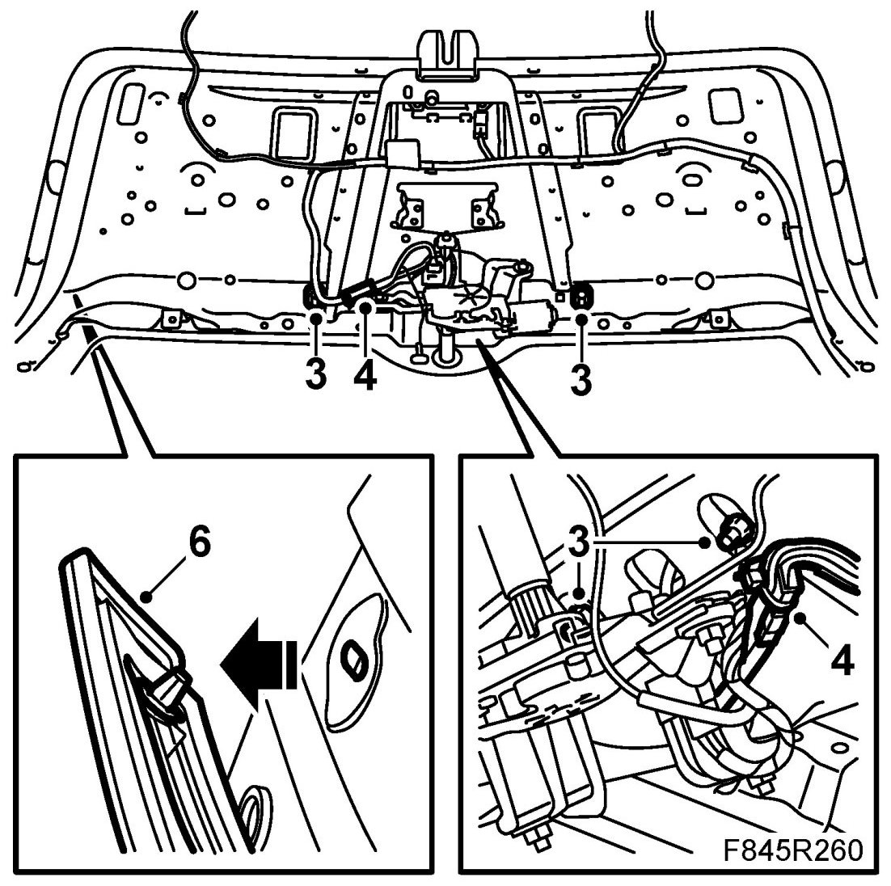
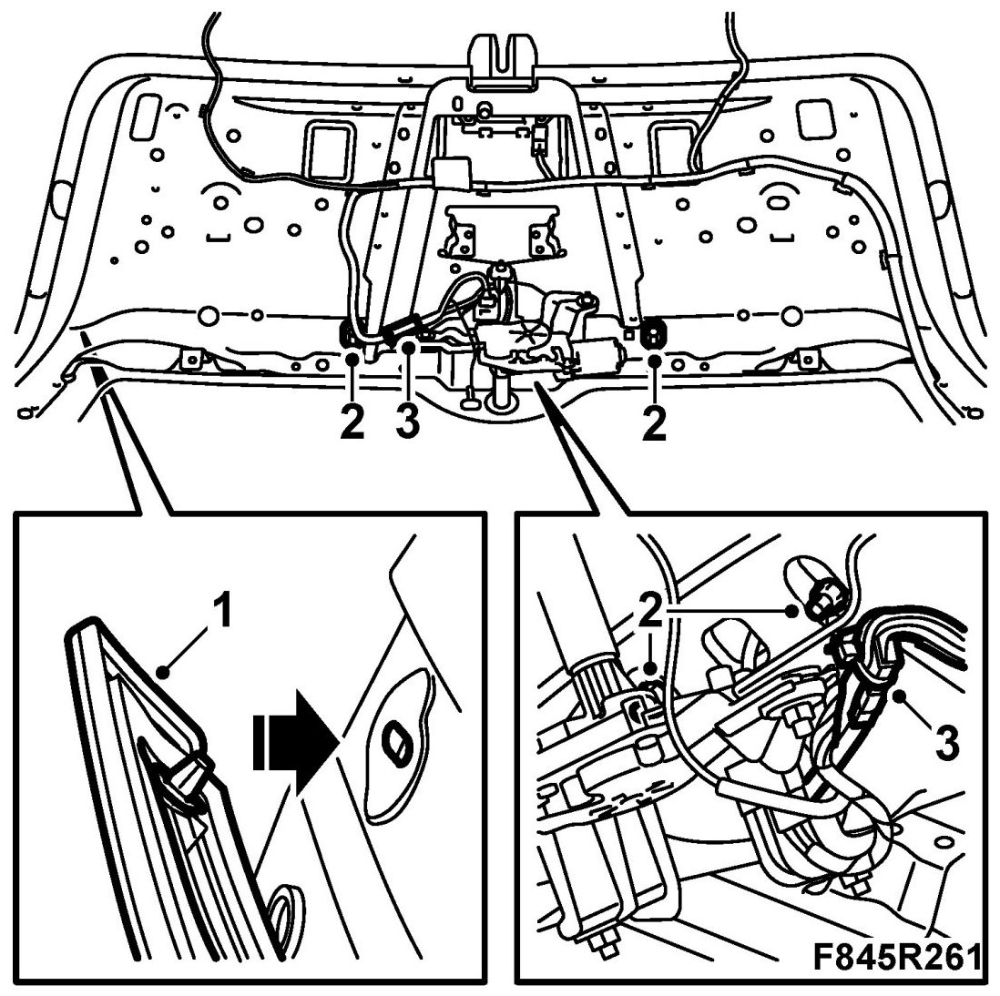
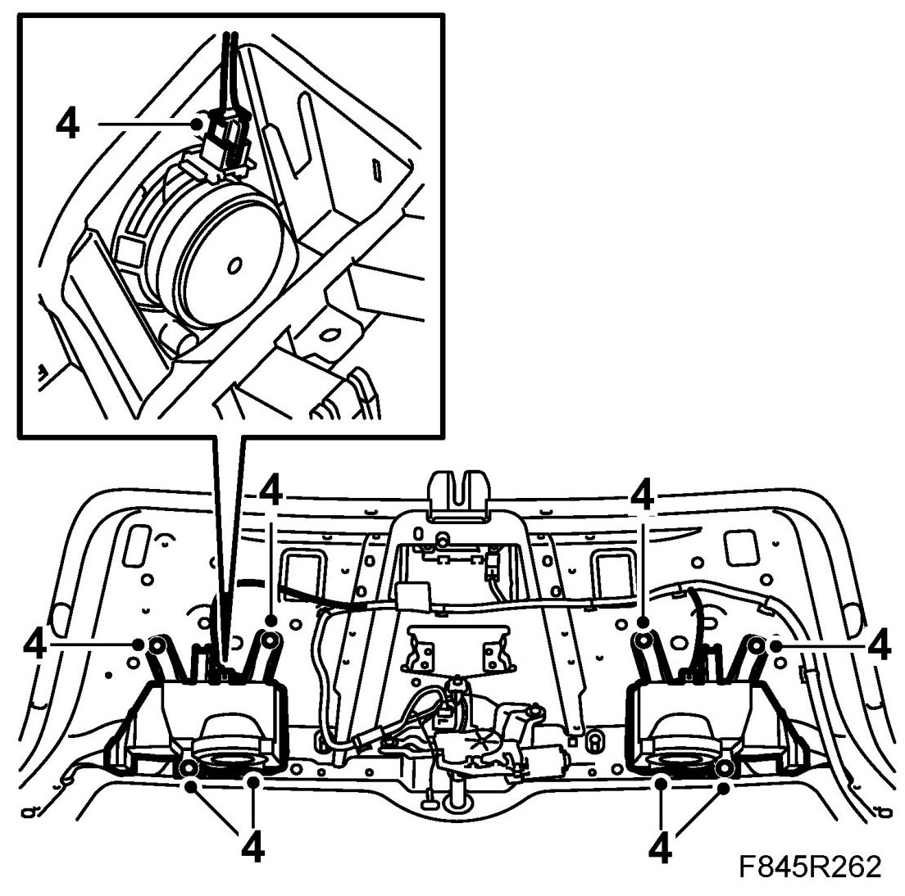

Tailgate, Opening Handle, 5D
Tailgate, Opening Handle, 5D
To remove
1. Remove Tailgate trim .
2. Remove the speaker connectors. Remove the holders for the speakers.

3. Remove the nuts holding the moulding on the tailgate.

4. Unplug the connector.
5. Close the tailgate. Have the remote control prepared in case the tailgate does not lock.
6. Remove the opening handle.
7. When changing opening handle:
7.a. Remove the nuts holding the handle to the moulding and price loose the handle using 82 93 474 Removal tool.
7.b. Fit the handle to the moulding.
To fit
1. Insert the connector through the passage. Put in place the opening handle.

2. Open the tailgate. Fit the nuts.
3. Plug in the connector.
4. Fit the speaker holders and plug in the connector.

5. Fit Tailgate trim .
6. Check that the lock is working.